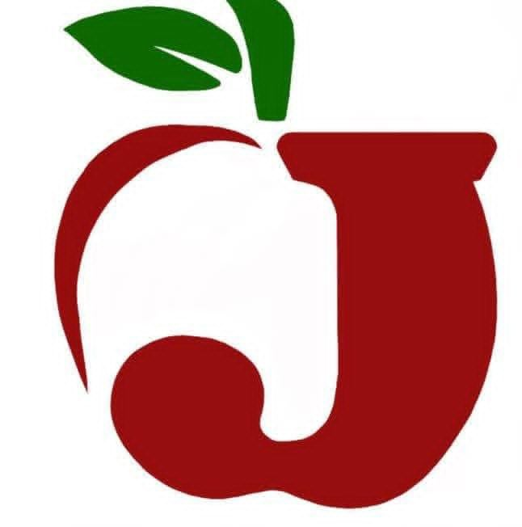
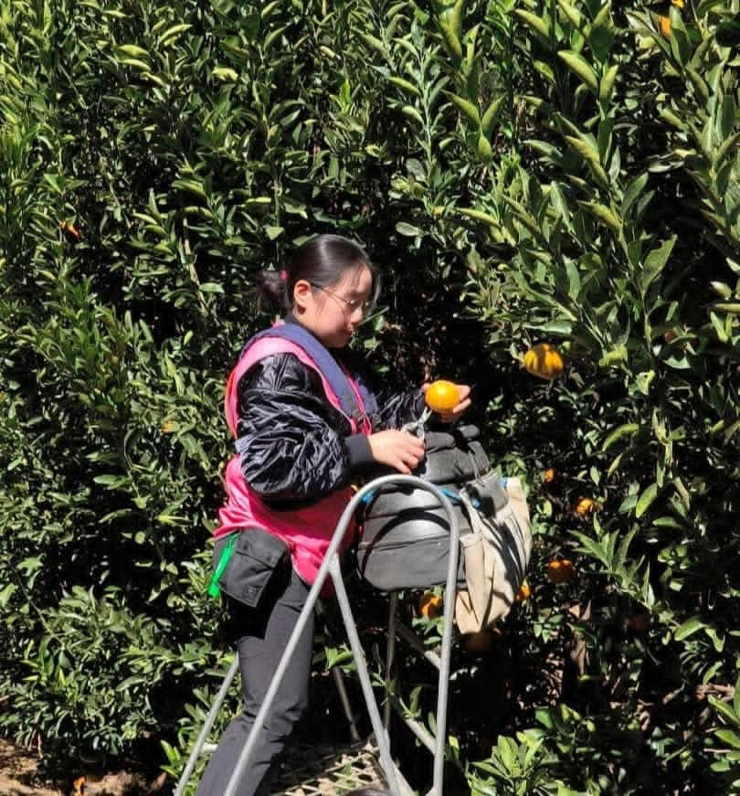
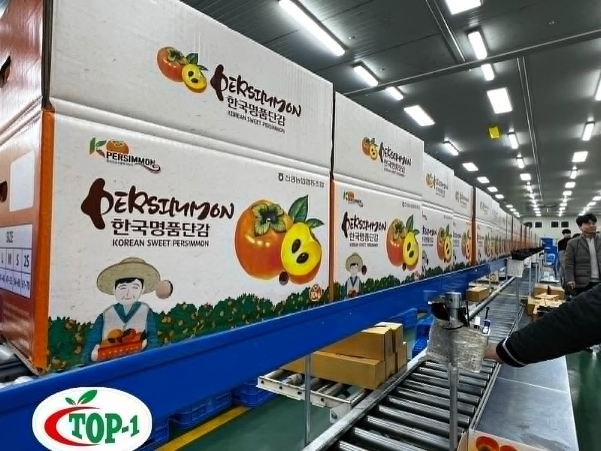
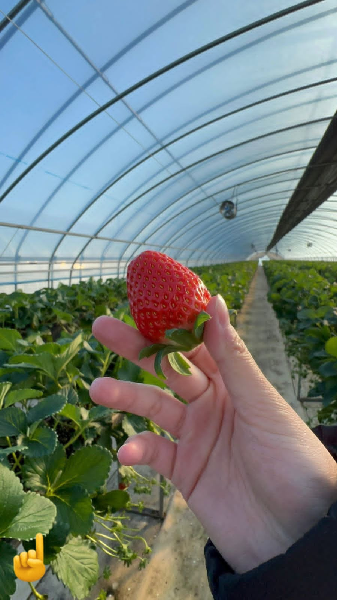
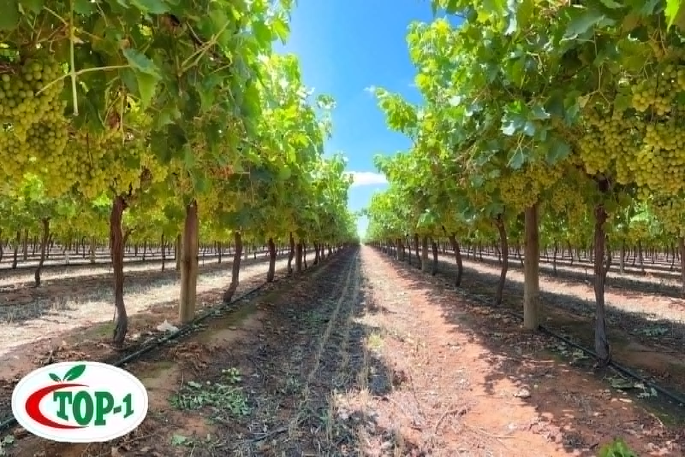
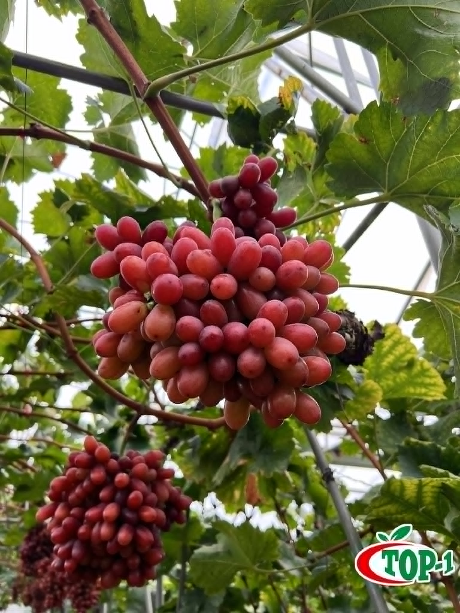
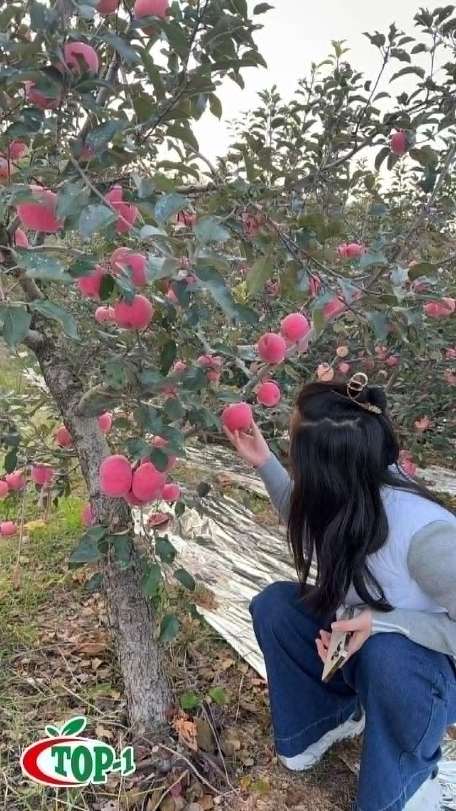
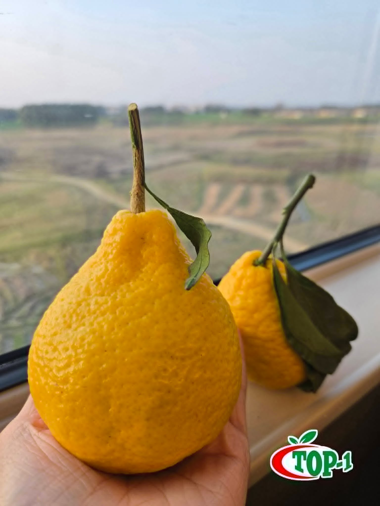

JHUY FRUIT
Premium fruit. Global sources. Local reach.
JHUY Fruit is an importer committed to bringing premium fruits from around the world to Philippine customers, with a focus on freshness, flavor, quality and dependable supply.

WHAT WE DO
Bringing quality produce closer to customers.
The original JHUY Fruit website established the business as an importer of premium fruits. Version 3 keeps that positioning while giving it a stronger platform for future product catalogues and wholesale information.
Global sourcing
Premium imported fruits sourced through established international produce relationships.
Freshness & quality
A product offering centered on freshness, flavor and a quality experience for customers.
Local distribution
Physical presence across Manila, Laguna and Pampanga gives the business reach into multiple local markets.
FROM SOURCE TO MARKET
Fresh produce begins at the source.
Images from orchards, greenhouses and packing operations reflect the sourcing relationships and product categories behind JHUY Fruit's global produce network.







GLOBAL PRODUCE PARTNERS
Brands connected to JHUY Fruit.
The following logos were supplied as JHUY Fruit partners. Final public descriptions should reflect the exact relationship and any brand-usage requirements.
OUR LOCATIONS
Serving customers across key markets.
These locations are migrated directly from the existing JHUY Fruit website.
Manila
701 Santo Cristo Street
San Nicolas, Manila
Laguna
Gen. M. Capinpin St.
Poblacion, Biñan, Laguna
Pampanga
Santo Niño Guagua Public Market
Pampanga
CUSTOMER VOICES
What customers have said.
These testimonials are migrated from the original public JHUY Fruit website and can be retained, edited or removed before launch.
“Bilang isang mahilig sa prutas, labis akong natuwa sa sariwa at natatanging lasa ng mga prutas mula sa JHUY Fruits.”
— Sherwin Ang“Hindi ako nagkamali sa pagpili ng JHUY Fruits para sa aking pamilya. Ang bawat kahon ng prutas na dumating sa amin ay puno ng kalidad at lasa.”
— Dion Gan“Sobrang sulit sa JHUY Fruits! Ang bilis ng delivery at ang prutas, fresh na fresh.”
— Yeng KatigbakFRUIT INQUIRIES
Looking for premium imported fruit?
Contact JHUY for product availability, sourcing discussions and commercial inquiries.
Start an inquiry →